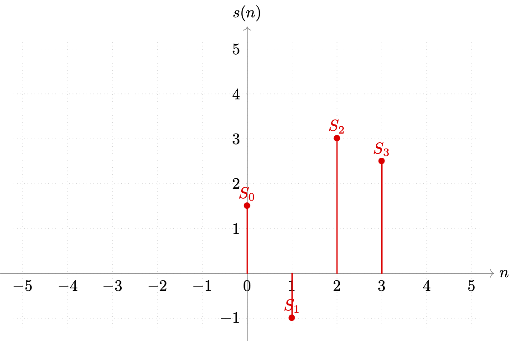
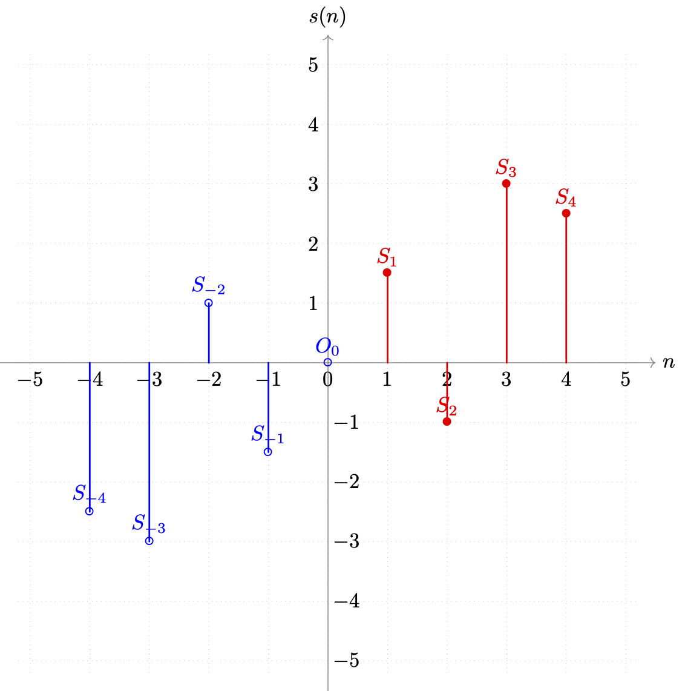
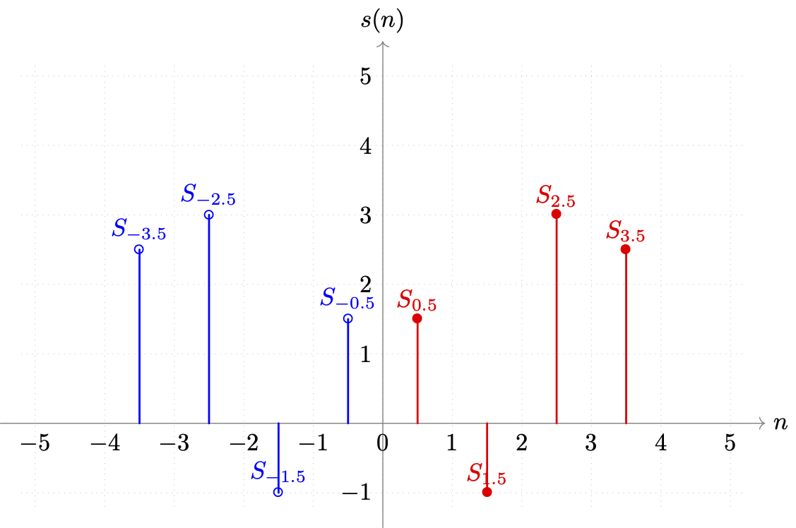

3.5.1 整数离散正余弦变换（IDST/IDCT）
整数离散正余弦变换（IDST/IDCT） ，顾名思义，就是将原本作用于浮点域的离散正余弦变换（DST/DCT），通过适当放缩量化到整数域进行 。
在本章开始时，我们曾花了大量篇幅讲解信号分析的核心算法， 傅立叶变换（Fourier Transform） ，并简短的辨析了一维/二维离散傅立叶变换（1D/2D-DFT）。
回顾前文。有提到，如果取任意点 P⃗(x,y) 可取 x∈[0, 1, ⋯, W] ， y∈[0, 1, ⋯, H] ，只取整数位置。同时， u∈[−2U, ⋯, +2U] 、 v∈[−2V, ⋯, +2V] ，有离散 k⃗∈[k0⃗, k1⃗, ⋯, kn⃗] ， n=UV=HW ，则：
SDD: f^(u,v)FDD: f(x,y)=x=0∑Wy=0∑Hf(x,y)⋅e−i(ux+vy)=U⋅V1u=−U/2∑+U/2v=−V/2∑+V/2f^(u,v)⋅Fω(x,y)
即由空域离散化（SDD）与频域离散化（FDD）共同构成空频离散化（SFD [Spacial Frequency Discrete]）表达的 二维离散傅立叶（2D-DFT） ，如下所示：
Fω=[Fk0⃗,f^(u,v)=x=0∑Wy=0∑Hf(x,y)⋅e−i(ux+vy) ⇔Fk1⃗,⋯,Fkn⃗] f(x,y)=U⋅V1u=−U/2∑+U/2v=−V/2∑+V/2f^(u,v)⋅Fω(x,y)
虽然当时，并没有约束复平面波 Fω(x,y) 波矢 k⃗ 的方向，即方向可以是平面内任意角度与大小。但对于周期（范围）确定情况下，构成傅立叶变换的基底函数族 Fω=[Fk0⃗, Fk1⃗,⋯,Fkn⃗] ，基底函数（即原函数拆解的目标平面波组）的选取，却是可以被 一定程度约束的 。
如果我们约束，取周期 T=2πn 的标准正余弦函数（Sine/Cosine），按照 四分之一周期 的步长 Step=2π 偏移得到的 Fξ(x) 和 Fη(y) 构成波矢 k⃗ 。选取沿着 x 轴方向的一维波 Fξ(x) 和沿着 y 轴方向的一维波 Fη(y) 组成的 16n 个定向复平面波 Fω(x,y) 集合，为当前函数的基底函数族。
那么，我们就能够在 补齐周期数据 后，使用 快速傅立叶变换（FFT） 来求解了。
但这样的做法，适用于分析，却并不适合冗余处理场景。
即使运用快速傅立叶变换，也仍然会有较大的算力消耗。且由于完整作用于任意数据源信号，所以不能保证基底函数族整体层面的规律性，从而无法提炼出统一的矩阵化算子。这让直接使用传统分析算法的方式，在 GPU 加速方面尽显劣势。
考虑到冗余压缩，并不要求保证数据帧完整不可分的输入，且精度也相对分析场景要求较低。如果能够适当的利用指数函数三角函数化，其本身的周期规律和标准化约束，建立基底整体的规律性，来契合傅立叶变换的性质。就能够在消减不必要参数（常量固定）并限定生效范围后，实现对离散傅立叶变化的常量化矩阵运算。建立卷积核，加速压缩过程。
因此，首选的出发点，就是 泛化离散正余弦变换（DST/DCT）到任何已知周期（范围）的数据信号源 。
离散正余弦变换（DST/DCT）的泛化
沿用前文设定，记构成原信号函数 s(t) 的复指数函数 Sω(t) 有角频率（角速度）为 ωn=T2πn 。有傅立叶函数：
s(t)a^ω=N1n=0∑Na^ω⋅cos(ωt)+i⋅b^ω⋅sin(ωt)=s^(−ω)+s^(ω) b^ω=i1⋅(s^(−ω)−s^(ω))
按约束条件，信号函数波长 T=2π 做步长 Step=2π 的可变 n∈[0, N−1] 等分，使复指数函数 Sω(t)=Sω(n) 。则存在 k∈[0, N−1] 有 ωn=T2πn=N2πk=ωk 简化表示为 ω ，可对原式做三角函数离散化处理（详细推导回顾本章首节）。
当输入信号满足奇函数特性时，可得 标准正弦的离散正弦变换（DST）的傅立叶展式 为：
s(n)s^(k)=N1k=0∑N−1s^(k)⋅sin(N2πnk)=n=0∑N−1s(n)⋅sin(−N2πnk)
当输入信号满足偶函数特性时，有 标准余弦的离散余弦变换（DCT）的傅立叶展式 为：
s(n)s^(k)=N1k=0∑N−1s^(k)⋅cos(N2πnk)=n=0∑N−1s(n)⋅cos(−N2πnk)
但是，自然信号是不分奇偶的，想要将公式适用范围扩大，就需要根据正余弦傅立叶变换要求，对输入信号进行不改变原始数据的扩充调整。根据选择作为基底的标准函数正余弦的差异，人为构造 满足条件输入的方法论，被分为 离散正弦变换（DST）分解 和 离散余弦变换（DCT）分解 ，两套实现。
假设原信号函数 s(t)=s(n) 在 n∈Z[0, N−1] 的各节点位置，有样本采样 S∈[S0, SN−1] ，取 N=4 模拟最小子块（即实际技术被使用时的通用情况）。如图：

图 3.5.1-1 事例样本取值与切片索引关系图示
当目标分解为 DST 时，我们需要平移原数据 +23Step 个步长，并补充中心原点 O0 后，再做基于中心原点 O0=(0, 0) 的映射。如此才能保证，补充的映射数据和旧数据，能够组成新的等步长数据组，满足离散化的处理条件。得到如下新集合（蓝色为补充数据，红色为原数据）：

图 3.5.1-2 事例样本目标 DST 补充后与切片索引关系图示
新的样本集，数据量较原有数据翻了一倍多。但只有 轴正向的取值有意义。所以，采用 DST 类型分解，在扩充后，周期跨度都变为了 T=2N+1 ，且原离散展式 只有 n∈[1, N] 的部分是有效的 。我们可以将偏移的 +1×Step 划到式中处理，则 n 的取值范围就仍然可以保持为 n∈Z[0, N−1] 。
不过考虑到 DST 目标是为了处理奇数阶信号源分解，为避免 sin(0)=0 值无意义的问题，会取 k∈[1, N] 的范围，并选用标准正弦向左移动 −21π 的偏移作为 基底正弦族 。因此，为了统一，对 n 采用直接包含偏移 +1×Step 的取值，使得 n 有 n∈Z[1, N] 。需要注意这个细节差异。
当目标分解为 DCT 时，需要在基于 y=s(n) 轴对称前，先行平移元数据 +21Step 个步长。得到如下新集合（蓝色为补充数据，红色为原数据）：

图 3.5.1-3 事例样本目标 DCT 补充后与切片索引关系图示
新的样本集，数据量较原有数据翻了一倍。同样只有 x 轴正向的取值有意义。所以，采用 DCT 类型分解，在扩充后，周期跨度都变为了 T=2N ，且原离散展式 只有 n∈[21, N−21] 的部分是有效的 。而由于非整数索引 n 不利于匹配原值，我们将偏移的 +21Step 划到式中处理，则 n 的取值范围就仍然可以保持为 n∈Z[0, N−1] 。
于是，结合两种分解，有：
DST:DCT:⎩⎪⎪⎪⎪⎨⎪⎪⎪⎪⎧s(n)s^(k)=2N+11k=1∑Ns^(k)⋅sin(2N+12π(k−21)n)=√2N+11k=1∑N−(−√2N+11⋅s^(k))⋅sin(2N+1πn(2k−1))=2⋅n=1∑Ns(n)⋅sin(−2N+12π(k−21)n)=2⋅n=1∑Ns(n)⋅sin(−2N+1πn(2k−1))⎩⎪⎪⎪⎪⎨⎪⎪⎪⎪⎧s(n)s^(k)=2N1k=0∑N−1s^(k)⋅cos(2N2π(n+21)k)=√2N1k=0∑N−1(√2N1⋅s^(k))⋅cos(2Nπ(2n+1)k)=2⋅n=0∑N−1s(n+21)⋅cos(−2N2π(n+21)k)=2⋅n=0∑N−1s(22n+1)⋅cos(2Nπ(2n+1)k)
不过，由于 DCT 采用了 非整数步长 ，当 k=0 时并不一定有拟合的曲线使得 s^(0)=0 ，且 偶函数特点使 s^(0) 在上式中被重复计算，因此需要针对变换后的 s(n) 剔除一次的 s^(0) 均值累积，所以：
DCT∣k=0:⎩⎪⎪⎪⎪⎪⎪⎪⎪⎪⎨⎪⎪⎪⎪⎪⎪⎪⎪⎪⎧s(n)s^(k)=N1⋅s^(0)+√2N1k=1∑N−1(√2N1⋅s^(k))⋅cos(2Nπ(2n+1)k)=√2N1(√2N2⋅s^(0))+k=1∑N−1(√2N1⋅s^(k))⋅cos(2Nπ(2n+1)k))=2⋅n=0∑N−1s(22n+1)⋅cos(2Nπ(2n+1)k)
上式中，对原信号函数 s(n) 的 DST 均值常量 2N+11 拆解为 (√2N+11)2 两部分，而 DCT 均值常量 2N1 拆解为 (√2N1)2 两部分。其目的是为了，通过分别分配到各自展开式和傅立叶解上，来保证工程化后的算子，在 正逆运算上的统一 。
因此，我们取：
DST:DCT:Xk=−√2N+11⋅s^(k)=√2N+11⋅s^(−k)Xk=√2N1⋅s^(k)&X0=√2N2⋅s^(k)
代入即可得到，原 离散正弦变换（DST）的工程表达式 ：
DST:k∈[1, N]n∈[1, N]⎩⎪⎪⎪⎪⎨⎪⎪⎪⎪⎧SnXk=√2N+11k=1∑NXk⋅sin(2N+1πn(2k−1))=√2N+12⋅n=1∑NSn⋅sin(2N+1πn(2k−1))
和，原 离散余弦变换（DCT）的工程表达式 为：
DCT:k∈[0, N−1]n∈[0, N−1]⎩⎪⎪⎪⎪⎪⎪⎪⎪⎪⎨⎪⎪⎪⎪⎪⎪⎪⎪⎪⎧SnXkXk=√2N1k=0∑N−1Xk⋅cos(2Nπ(2n+1)k)=√2N2⋅n=0∑N−1Sn⋅cos(2Nπ(2n+1)k) ,k≥1=√2N2⋅2⋅n=0∑N−1Sn⋅cos(2Nπ(2n+1)k) ,k=0
这就是信号处理上经常使用的，泛化离散正余弦变换公式组 。
从上面的过程中可以发现，我们在傅立叶基底函数族的选取上，实际限定了函数的相位、周期，并约束了原信号的特性。如果在初始相位和原信号特性上做调整，最终的结果也会有所差异。从数学工具角度来看，这种变化 最终会产生 8 种 DST 和 8 种 DCT 的变体 ，以分别应对实虚部奇偶阶数和初始相位不同时的快速计算。但由于工程化上需要力求简洁和相似（形似）的表达。因此，相对于其他几种的组合，我们最终采用的公式组中的两类，来用于各自条件输入的统一处理。
现在，GPU 加速的理论已准备就绪，我们来看算子是怎么获取的。
整数离散正弦变换（IDST）的 GPU 矩阵算子
首先，将离散正弦变换扩展到二维情况，有：
DST:Xk(u,v)k(u,v)&p(x,y)∈[(1, 1), (N, N)]=(√2N+12)2⋅p=(1,1)∑(N,N)Sp(x,y)⋅sin(2N+12u−1πx)⋅sin(2N+12v−1πy)
考虑可构成卷积核的子块最小大小为 4×4 ，则有 N=4 使上式变为：
DST:Xk(u,v)k(u,v)&p(x,y)∈[(1, 1), (4, 4)]=94⋅p=(1,1)∑(4,4)Sp(x,y)⋅sin(92u−1πx)⋅sin(92v−1πy)
如此，就可以矩阵表示 4×4 的 DST 变化为：
DST4×4:Xk(u,v)∣v=KDST⋅Sp(x,y)=[32⋅v=1∑4(32⋅u=1∑4sin(92u−1πx))⋅sin(92v−1πy)]⋅Sp(x,y)
即有：
KDST=32⎣⎢⎢⎡sin(91π)sin(93π)sin(95π)sin(97π),sin(92π),sin(96π),sin(910π),sin(914π),sin(93π),sin(99π),sin(915π),sin(921π),sin(94π),sin(912π),sin(920π),sin(928π)⎦⎥⎥⎤=32⎣⎢⎢⎡sin(91π)sin(93π)sin(94π)sin(92π),sin(92π),sin(93π),−sin(91π),−sin(94π),sin(93π),0,−sin(93π),sin(93π),sin(94π),−sin(93π),sin(92π),−sin(91π)⎦⎥⎥⎤
其中， KDST 就是 DST 的卷积核算子，但目前还是 浮点数的形式 。浮点数矩阵不利于 GPU 算力的节省，因此还需要整数化。考虑 KDST 本身作用在实际像素取值上，而像素值的数据格式是以整数形式离散化存储的，具有位深数据范围中值记为常量 D 。
比如，8-bit 位深格式可取范围为 [0, 255] ，就有 D=128 取值。我们可以利用这一特点来对原数据进行放缩，并四舍五入取整。
记整数化后的 KDST 为 K^DST 则:
K^DST≈⎣⎢⎢⎡29748455,55,74,−29,−84,74,0,−74,74,84,−74,55,−29⎦⎥⎥⎤=D⋅KDST
原 DST 的算子，即可以转化为如下表示：
Xk(u,v)∣v=D1⋅D⋅KDST⋅Sp(x,y)=D1⋅K^DST⋅Sp(x,y)
当然，这里单独计算了分离后波矢 k⃗=(u,v) 对应平面波的权重 Xk(u,v) ，那么对于整个 4×4 区域所有的平面波权重（即傅立叶解）就有 等价矩阵 ：
Xk∣4×4=(D1)2⋅K^DST⋅Sp∣4×4⋅K^DSTT
精简一下，即可写为：
Xk=(D1)2⋅K^DST⋅Sp⋅K^DSTT
这个即为 整数正弦变化（IDST）核心公式 ，而 K^DST 则被称为 整数正弦变化的基本算子（IDST Opt） 。显然，在已知 Sp 和存储范围 D 的情况下，还是非常容易求得 Xk 的。而对应的 GPU 程序片也很简单，基本可当作滑动窗口移动步长 K=4 的固定算子乘法运算，就不再复写了。
整数离散正弦变换（IDST）的 GPU 矩阵算子
同理于 IDST，虽然 整数离散余弦变换（IDCT） 的切入理论，和 IDST 有一些不同。但最终的算子区别仅在于取值上。
仍然需要，将离散正弦变换扩展到二维情况。有：
DCT:Xk(u,v)k(u,v)&p(x,y)∈[(0, 0), (N−1, N−1)]εk∣k=(0,0)=√21&εk∣k≠(0,0)=1=(√2N2⋅εk)2⋅p=(0,0)∑(N−1,N−1)Sp(x,y)⋅cos(2N2x+1πu)⋅cos(2N2y+1πv)
依然，考虑可构成卷积核的子块最小大小为 4×4 ，则有 N=4 使上式变为：
DCT:Xk(u,v)k(u,v)&p(x,y)∈[(0, 0), (3, 3)]εk∣k=(0,0)=√21&εk∣k≠(0,0)=1=(√2εk)2⋅p=(0,0)∑(3,3)Sp(x,y)⋅cos(82x+1πu)⋅cos(2N2y+1πv)
如此，就可以矩阵表示 4×4 的 DCT 变化为：
DCT4×4:Xk(u,v)∣vεk∣k=(0,0)=KDCT⋅Sp(x,y)=[√2εv⋅y=0∑3(√2εu⋅x=0∑3cos(82x+1πu))⋅cos(82y+1πv)]⋅Sp(x,y)=√21⋅[εv⋅y=0∑3√21⋅(εu⋅x=0∑3cos(82x+1πu))⋅cos(82y+1πv)]⋅Sp(x,y)=√21&εk∣k≠(0,0)=1
即有：
KDCT=√21⎣⎢⎢⎢⎡√21cos(80π)cos(81π)cos(82π)cos(83π),√21cos(80π),cos(83π),cos(86π),cos(89π),√21cos(80π),cos(85π),cos(810π),cos(815π),√21cos(80π),cos(87π),cos(814π),cos(821π)⎦⎥⎥⎥⎤=√21⎣⎢⎢⎢⎡√21cos(81π)cos(82π)cos(83π),√21,cos(83π),−cos(82π),−cos(81π),√21,cos(83π),−cos(82π),cos(81π),√21,−cos(81π),cos(82π),−cos(83π)⎦⎥⎥⎥⎤
依然取位深数据范围中值记为常量 D 。有 D=128 对应 8-bit 位深格式 [0, 255] 的可取范围，使得我们能够将结果矩阵整数化处理。记整数化后的 KDCT 为 K^DCT 则:
K^DCT≈⎣⎢⎢⎡64836436,64,36,−64,−83,64,−36,−64,83,64,−83,64,−36⎦⎥⎥⎤=D⋅KDCT
原 DCT 的算子，即可以转化为如下表示：
Xk(u,v)∣v=D1⋅D⋅KDCT⋅Sp(x,y)=D1⋅K^DCT⋅Sp(x,y)
当然，这里单独计算了分离后波矢 k⃗=(u,v) 对应平面波的权重 Xk(u,v) ，那么对于整个 4×4 区域所有的平面波权重（即傅立叶解）就有 等价矩阵 ：
Xk∣4×4=(D1)2⋅K^DCT⋅Sp∣4×4⋅K^DCTT
精简一下，即可写为：
Xk=(D1)2⋅K^DCT⋅Sp⋅K^DCTT
这个即为 整数余弦变化（IDCT）核心公式 ，而 K^DCT 则被称为 整数余弦变化的基本算子（IDCT Opt） 。同样，在已知 Sp 和存储范围 D 的情况下，还是非常容易求得 Xk 的。而对应的 GPU 程序片也很简单，基本可当作滑动窗口移动步长 StepK=4 的固定算子乘法运算，就不再复写了。
现在汇总两者所述 ，对于整数离散正余弦变换（IDST/IDCT）的同理性，我们将 K^DST 与 K^DCT 统一称为 K^ 矩阵，即 整数离散正余弦变换算子（IDST/IDCT Opt） 。而 K^ 的取值，显然和位深（Bit Depth）是强相关的。只有确定位深情况，才有固定的 K^ 矩阵。
因此，当存储格式（Data Format）位深为 8-bit 时目标 4×4 大小，整合后的公式如下 ：
K^DST≈⎣⎢⎢⎡29748455,55,74,−29,−84,74,0,−74,74,84,−74,55,−29⎦⎥⎥⎤,Xk=(D1)2⋅K^DCT≈⎣⎢⎢⎡64836436,64,36,−64,−83,64,−36,−64,83,64,−83,64,−36⎦⎥⎥⎤K^⋅Sp⋅K^T
整合后的两种变化中， K^DCT 会将卷积核范围内大部分 低频信息 对应基底的 分离权重 ，富集到结果矩阵 Xk 的 左上角 ；而 K^DST 会将卷积核范围内大部分 低频信息 对应基底的 分离权重 ，富集到结果矩阵 Xk 的 右上角 。而低频权重所对应的高残差区域，才是原始图像最关键的轮廓数据。因此，对于压缩场景，考虑到数据存储惯性，采用 K^DCT 得到关键权重值 Xk(0,0) 的方式更为合适。而 K^DST 则由于取用的基底函数类型，决定了其更适合平滑波动区域的数据处理，例如轮廓内的相对均匀填充部分。
我们通常将 K^DCT 得到的 Xk(0,0) 称为 直流系数（DC [Direct Coefficient]） ，而把 Xk 其余位置的基底函数权重值，称为 交流系数（AC [Alternating Coefficient） 。
数据还原时，通过矩阵逆运算求得常量矩阵 K^−1 ，随后代入 Sp=D2⋅K^−1⋅Xk⋅K^−1T 式中还原原值。而对于其它类型的三角基底函数，和不同的目标窗口大小（常用为 2n , 取 n=2,3,4,5 ），使用基本公式代入，并按照上述推导类比处理，即可获取对应算子。
这就是最终主流的，整数离散正余弦变换。之于其它的 DST/DCT 共计 16 种类型，皆在特殊条件下起相关作用，被运用到针对子块的数据分离过程中。当然，推理过程依旧一致，只不过部分性质存在不同，如 DCT-8 就无法利用周期性来根据已知算子直接类推，每个不同的大小，都需要重新计算，这里不另作展开。
而对于整数离散正余弦变换本身来说，我们常用它来初步完成对子块内高低频数据的分离汇总，即对数据的分离归类。借此，方便后续在频域上，根据提纯结果进行压缩处理。对于其它位深取值，则根据 K^=D⋅K 计算即可，而 K 在窗口大小不变（即基底函数族固定）情况下，不会发生变化，可认为是一个常数矩阵。